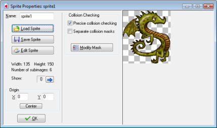
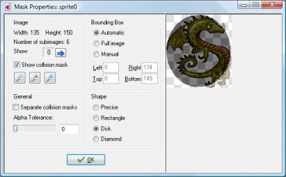

A new button Save Sprite has appeared. With this button you can save the sprite in a proprietary format. This format will not only store the image(s) of the sprite but also other settings, such as collision settings and the origin. The file will have the extension .gmspr. Game Maker can load such files but also the games can load them.
At the bottom-left, you can indicate the origin of the sprite. This is the point in the sprite that corresponds with its position in the room. When you set an instance at a particular position, the origin of the sprite is placed there. Default it is the top left corner of the sprite but it is sometimes more convenient to use the center (by clicking the Center button) or some other important point. You can even choose an origin outside the sprite. You can also set the origin by clicking in the sprite image. The origin will be shown with a cross.
Most important are the options related to collision checking. Whenever two instances meet a collision event is generated. Collisions are checked in the following way. Each sprite has a mask. Default this corresponds to all pixels that are not fully transparent. When two pixels in the masks of the two sprites overlap, a collision is reported.
Sometimes you don't want precise collision checking. In this case, uncheck the box Precise collision checking. Now the bounding box is used as the mask.
When the sprites has multiple subimages, default there is just a single mask that combines the masks of all subimages. Normally this is what you want but in certain situations you might want each subimage to have its own mask. In this case check the box Separate collision masks.
If you want even more control over the collision masks, press the button Modify Mask. The following window will show:

At the left top there is again the information about the sprite image. You can show the different subimages. Also you can indicate here whether to show the collision mask (default on). In this case, in the images at the right the mask is shown in dark. You can also zoom in and out to get a better view.
To the right of this you can change the bounding box. Only pixels inside this bounding box are used for the mask. Default the bounding box is automatically computed, taking the alpha tolerance into account, separate for each subimage, when using separate collision masks. You can also set it to the full image or you can set it to manual. In the latter case you can specify the bounding box yourself. When set to manual you can also draw the bounding box with the left mouse button in the image, or you can move it with the right mouse button. (Note though that the mask is shown while drawing, not the bounding box!)
Below this you can indicate the shape of the mask. Default is precise, pixel-wise collision checking, but you can select here also to use the bounding rectangle, a disk (or ellipse) inside it, or a diamond shape. Rectangles or disks are is many cases better representations of the shape. (Note that the choice has no effect on speed!)
Finally, at the left bottom you can (again) indicate whether or not there should be separate collision masks for all subimages. (Note that if you set the bounding box manual, a single bounding box will be used for all subimages, regardless of this setting.) You can also indicate the tolerance with respect to the transparency. With a higher tolerance also pixels that are partially transparent are left outside the mask. This influences both the bounding box (when not set to manual) and the mask for precise collision checking.
It is important to carefully decide on the collision mask you use for your sprites. Although precise collision checking might seem the most logical option, in many cases game play is improved by using bounding boxes or disks, or masks that are a bit smaller than the actual sprites. If you want even further control over the mask, note that for objects you can specify a different sprite to use as mask. In this way you can make the collision mask completely independent of the image.
Once you are done, press OK. If the mask was modified, the word Modified will show in the sprite form such that you are reminded that you changed some settings here.
Game Maker has extensive possibilities to create and change your own sprites. Information about this can be found in the following pages:
Editing your sprites
Strips
Editing individual subimages